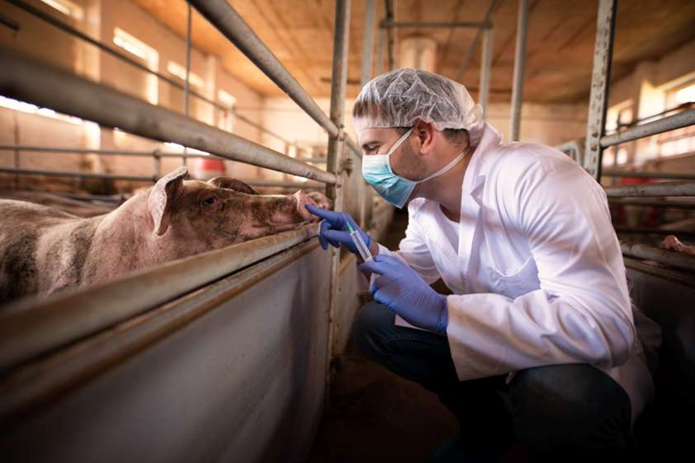
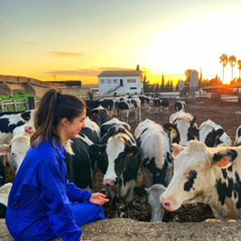
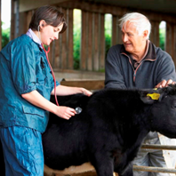
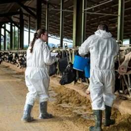
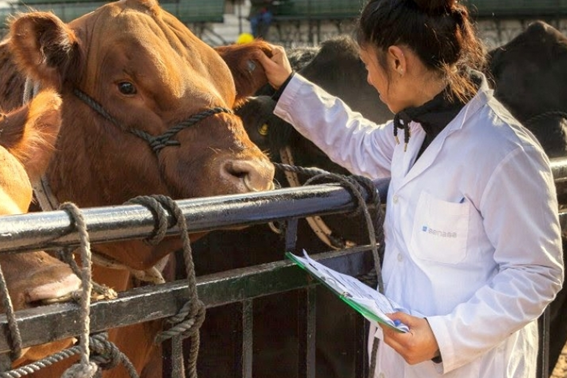

AniTec is the platform designed for professional veterinarians who want to efficiently manage the clinical history of their patients and coordinate with ranchers. Improve your productivity and quality of care.

Discover how AniTec can transform your daily professional practice.
Access the complete history of each animal: vaccines, treatments, diagnoses, and progress. All in one click.
Manage your visits and appointments. Receive reminders for pending cases and scheduled follow-ups.
Share information directly with producers. Coordinate treatments and follow up without intermediaries.
Analyze disease patterns and most common treatments. Improve your diagnosis with real data.
Access information from anywhere. Ideal for field visits and emergencies.
Build your own client and patient database. Improve your relationship with producers.
Thousands of veterinarians trust AniTec to optimize their professional practice.
Quickly find any animal by name, code, or identification. Filter by breed, age, or owner.
Document each consultation: reason, diagnosis, prescribed treatment, and recommendations in seconds.
Generate complete prescriptions with medication information, exact doses, and administration frequency.
Schedule automatic follow-ups and receive alerts when a patient requires medical attention.
Send detailed reports directly to the producer. Keep them informed about their animal's condition.
Generate detailed reports of cases attended, practice statistics, and herd health analysis.
Discover real situations where AniTec makes your daily work easier

You arrive at a new farm and check the animal's history beforehand. You know what treatments it has had, recent vaccinations, and any relevant data before examining it.

You receive an emergency call. From your phone you can see the animal's history while traveling to the location. You're prepared from the first minute.
A rancher informs you about the progress. You can review the previous case and give precise recommendations without needing a new visit.

You can share specific case information with other veterinarians treating the same herd. Improves continuity of animal care.

Join more than 1,200 veterinarians who are already improving their care with AniTec. Start your free trial today and transform the way you work with livestock.
Your information is safe. We never share your data.